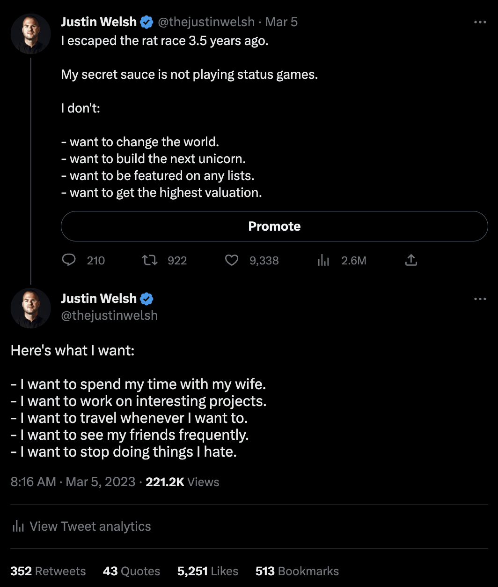
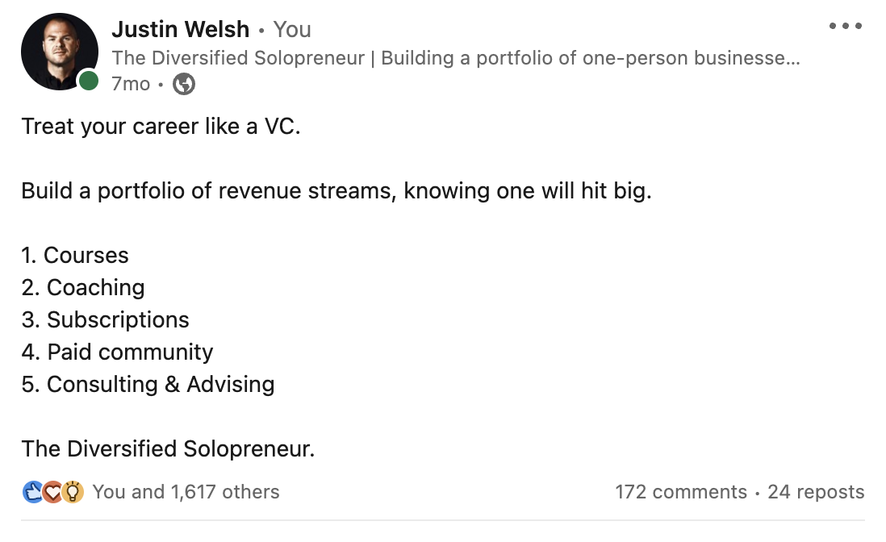

I’ve been a solopreneur for 5 years, making over $4M from 6 online revenue streams.
Launching my one-person business has improved my life in many ways. There's nothing like unlimited earning potential and time freedom.
If you're new to solopreneurship, there are plenty of business ideas to consider.
In this article, I'll share how I choose my one-person businesses, lucrative solopreneur ideas you can explore, and tips for becoming a "diversified solopreneur".
How I choose my one-person businesses
In 2019, I was burnt out in my corporate role. I knew something had to change.
That year, my wife, Jennifer, and I started to completely redesign our lives with more intention.
What does this mean, exactly?
In short:

Naturally, the businesses I've chosen check all these boxes.
To create the ideal one-person business I have now, I've combined the following to minimize financial risk and gain personal fulfillment.
Here are my 3 tips for choosing one-person businesses:
1. Blend skills with a passion
The first step to choosing your one-person business is combining your specific skills with a passion. As you'll be in charge of everything, you must optimize for a business you'll love running.
Skills generate income, and obsession keeps you going.
So, identify and combine your specific skills with something you're obsessed with. This will help you stand out in the crowded digital space — a must if you want to get attention online.
2. Identify and solve people's problems
Talk to people to understand their common problems, and grow a small audience around solving that problem.
For example, suppose you start with a service-based business model like freelance writing for clients to meet your monthly income goals.
While working with these clients, pay attention to the problems they consistently face.
This could be the start of your next income stream — digital products to help solve those problems.
3. Keep startup costs low
Most aspiring solopreneurs say they don't have enough capital to build a business. But the truth is, you don't need much to start a one-person company.
I love digital-centric businesses because they're cheap to run. You don't need a separate office space or any storefronts.
To give you a rough idea, I operate at a 94% margin selling digital products on my website.
With just $31 per year, you can launch a one-person business.
List of solopreneur business ideas
- Paid newsletter creator
- Partnership creator
- YouTube creator
- Freelance writer
- Course creator
- Service business
- Cohort-based coaching
- Web designer
- Graphic designer
- Business consultant
1. Paid newsletter creator
A paid newsletter creator curates and publishes content for subscribers who pay a fee.
Depending on your niche, you can cover areas like industry news, expert insights, or tutorials.
As a paid newsletter creator, you can:
- Build and nurture a community of loyal subscribers
- Work with industry experts or influencers for guest insights
- Engage in deep-dive analyses that cater to specific industries
- Share exclusive insights, opinions, or trends on a chosen subject
- Create valuable content tailored to your audience's needs and interests
- Engage with your readers, gathering feedback to continually improve your content
As for monetization, you can generate income in several ways:
- Subscription model: Charge subscribers a recurring fee for access to your newsletter
- Sponsorship: Partner with brands or companies who want to promote their products or services to your readership (I swear by this!)
- Affiliate links: Embed product or service recommendations within your newsletter and earn a commission for every purchase or sign-up
- Exclusive deals: Work with brands to offer exclusive deals or discounts to your subscribers
2. Partnership creator
A partnership creator facilitates mutually beneficial collaborations between brands, influencers, or businesses.
Depending on your industry connections and niche, you can identify potential collaboration opportunities in areas ranging from eCommerce to content creation.
As a partnership creator, you'll:
- Negotiate terms that benefit all parties involved
- Identify brands, influencers, or businesses that complement each other
- Monitor and report on partnership success, adjusting strategies as needed
- Ensure smooth communication between partners to ensure project success
- Develop and propose partnership strategies tailored to specific goals, like increasing brand visibility or tapping into new customer segments
For monetization, there are several strategies at your disposal:
- Commission-based: Earn a percentage from sales, leads, or traffic generated from the partnerships you start
- Flat fee: Charge a standard fee for your partnership creation services
- Retainer: Offer ongoing partnership management and strategy services for a regular fee
- Sponsorship: Get paid for promoting a brand or product through your established partnerships
- Exclusive deals: Use your network to negotiate special deals or promotions that benefit all involved parties (while earning a profit)
3. YouTube creator
YouTube is a thriving space for content creators to showcase their talents, skills, and creativity.
A YouTube creator is an individual who creates and publishes videos on the platform. They aim to entertain, educate, and/or inform their audience.
As a YouTube creator, you can:
- Produce videos on your preferred topic
- Use your creativity, storytelling abilities, and video production skills to capture your viewers' attention and build a loyal following
- Engage with your audience through comments, live streams, or social media, to foster a sense of community around your content
In terms of monetization, YouTube creators can generate income in 5 ways:
- The YouTube Partner Program (YPP): Earn money through advertising revenue based on the number of views and engagement your videos receive
- Sponsored content: Brands pay you to promote their services or products on your YouTube channel
- Affiliate marketing: Promote products or services in a video and make a commission for every sale
- Paid community: Start a paid community on platforms like Discord or Patreon where fans can subscribe for exclusive content and updates
- Merchandise sales: Create a merchandise line (e.g. print-on-demand gear) and sell it on your eCommerce store
4. Freelance writer
Freelance writers produce various content types depending on their strengths and interests:
- Social media posts
- Blogs and articles
- Podcast scripts
- Press releases
- Case studies
- Newsletters
- Email copy
- Web copy
- Ad copy
The list goes on.
Besides content type, you can specialize in particular niches like technology, finance, and wellness.
If you're a ghostwriter, you will have to adapt your writing style to suit the tone, voice, and style of your client's brand.
There are 3 main umbrellas for generating income as a freelance writer:
Client work
Client work is the most popular path for new freelance writers as a consistent income can be generated with a few retainer clients.
Client work is the most popular path for new freelance writers as a consistent income can be generated with a few retainer clients.
You may write for founders, publications, and digital marketing agencies, to name a few.
To give you an idea of earning potential:
5 blogs per month for $500 each x 3 clients on this retainer = $7,500 per month
Most freelance writers I know get their clients by:
- Relying on referrals from past clients
- Showcasing a solid portfolio on their website
- Sharing their expertise online and attracting ideal clients
- Networking with other professionals in their industry or niche
Self-publishing
While working with clients, some freelance writers may generate additional income through self-publishing hard-copy books or eBooks. This is a great way to monetize your expertise and passions.
For example, if you love personal branding, you could write an eBook about building and nurturing an audience on a social media platform like LinkedIn.
Coaching and mentorship
A successful freelance writer with a decent social media following can pull in extra monthly revenue by offering coaching services or courses.
As a mentor, you can guide new freelance writers on where to get clients, what niche to pick, how to price services, who to target… you get the idea.
5. Digital course creator
Digital course creators share their knowledge with others who want to learn from them.
Courses generally include videos, tutorials, workbooks, quizzes, and other instructional materials. I make a portion of my income by selling two courses: The LinkedIn Operating System and The Content Operating System.
I enjoy this approach to making money because:
- A one-time investment in quality content can generate revenue for years to come
- I make money while I sleep, travel, and spend time with my family
- People can purchase and access my courses 24/7
However, creating a successful online course requires thoughtful planning, effective marketing, and implementing customer feedback.
Digital courses usually don't sell well if you haven't established trust with a pre-built audience in your niche.
If you're interested in creating a course, I recommend you build a social media following first.
Once you have a big enough audience to sell to, create digital courses that are:
- Value-packed, helping your customers solve problems quickly
- Priced in impulse-buy territory ($99-$199 is ideal)
- No more than 2 hours long
Remember, your customers are busy but want a significant outcome. Deliver accordingly.
6. Service business
A service business revolves around offering specific skills or expertise to clients in exchange for payment.
As a solopreneur in the service industry, you can:
- Tailor your offerings to suit specific client needs
- Offer consulting services in your field of expertise
- Offer expertise in areas like project management or digital marketing
- Host virtual workshops and training sessions to share your knowledge
Here are some ideas on how to monetize a service business:
- Hourly rates: Set an hourly fee for your time, especially for consulting or in-depth work
- Project-based fees: Charge clients based on individual projects, factoring in the scope and complexity
- Retainers: Secure long-term clients who need your services regularly, offering them a monthly fee structure
- Workshops and classes: If your expertise lends itself to teaching, charge for workshops or online courses
- Value-added services: Offer premium services or packages for clients looking for more comprehensive solutions
Considering this route? Staying current with industry trends (and refining your skills accordingly) is the best way to ensure your service business remains competitive and in demand.
7. Cohort-based coaching
As a cohort-based coach, you bring together a group of people with similar goals or challenges. Unlike the one-size-fits-all approach of many online courses, cohort-based coaching provides tailored guidance with the added benefit of peer interaction.
Cohort-based coaches take on various responsibilities:
- Provide exclusive helpful resources and tools
- Give 1:1 attention to students who need extra help
- Build a community where everyone helps each other
- Host regular virtual classes via Zoom or Google Meet
- Lead group talks, give assignments, and offer feedback
Potential monetization avenues for cohort-based coaching include:
- Tiered membership: Offer different levels of access or engagement and charge accordingly
- Course packages: Bundle your coaching with supplementary materials or services for a comprehensive learning experience
- Affiliate programs: Recommend tools, books, or other resources to your cohort and earn a commission
- Follow-up sessions: After the main coaching ends, offer additional sessions for a fee to those wanting more in-depth guidance
Overall, cohort-based coaching is a dynamic way to offer value while also building a robust community.
8. Web designer
Web designers create visually appealing and functional websites for entrepreneurs, businesses, and organizations.
They have a keen eye for design and user experience, and the technical skills to build websites that look good, are user-friendly, and are aligned with the client's branding and goals.
As a web designer, you can charge for your services based on project scope, complexity, and level of customization.
You may even offer pricing packages, depending on the services included:
- Website design
- Development
- Maintenance
Web design may be a viable path for you if:
- You have a sharp eye for design, layout, and navigation
- You can handle the technical aspects of website creation and maintenance
- You're familiar with content management systems (CMS) like WordPress
- You know the ins and outs of programming languages like HTML, CSS, JavaScript
9. Graphic designer
Graphic designers combine visual elements like images, colors, typography, and layout to create beautiful designs for print and digital mediums.
They are skilled in using design software like Adobe Photoshop, Illustrator, and InDesign. Like web designers, they have a keen eye for aesthetics, composition, and branding.
As a graphic designer, you can charge per project or offer pricing tiers depending on the services:
- Logos
- Website graphics
- Branding materials
- Packaging designs
- Social media graphics
- Marketing collateral (e.g. menus, posters, and banners)
10. Business Consultant
Business consultants provide expert advice and guidance to companies and individuals to help them solve problems, improve operations, and achieve their goals.
They focus on their area of specialization, such as marketing, finance, and human resources.
A business consultant works closely with clients to:
- Understand their unique challenges and goals
- Assess the current state of affairs
- Identify areas for improvement
- Develop strategies to address challenges
Like many other solopreneur ventures, business consultants charge for their services and expertise in a few ways:
- By the hour
- A fixed project fee
- A retainer for ongoing consulting services
- Packages or tiered pricing based on deliverables
Becoming a “Diversified Solopreneur”
Once you identify your passion and skillset and decide how you want to monetize, you can become a "diversified solopreneur."
The best advice I can give you to get there is this:
Start with one revenue stream but find ways to diversify shortly after. This helps eliminate risk.
Diversification is a big part of how I operate my solo business:

Pick one niche, become an expert at it, and build sub-revenue streams under that.
For example, I became obsessed with solopreneurship.
After documenting my journey on LinkedIn for a while, I started getting attention. People in my community would send me DMs asking for certain insights. I took notes.
From there, I've leveraged my audience to solve people's problems through different products and services.
I’ve been able to:
- Share my expertise through consulting and coaching
- Create and sell deep-dive digital courses for people who want to build a profitable one-person business
- Start a private community where like-minded solopreneurs can network, learn from each other, and get access to me
- Launch a weekly newsletter that provides free value, but also hosts business sponsors and drives traffic to my offerings
Of these revenue streams, I stick with the ones that bring me the most joy and fulfillment.
After running the private community for a while, I realized it was draining me.
While it was successful and profitable, it took away time from my family and areas of my business where I'd rather focus.
So, I shut it down.
Today, I primarily help people launch, grow, and monetize their online businesses through my courses. I use my weekly newsletter to share advice, let people know about my offerings and host business sponsors.
Remember: You don't pursue solopreneurship to do things you hate. Build a business where you can do what you want, when you want, and with whom you want.
Next steps for your solopreneurial journey
Running a business without employees is one of the most rewarding life experiences.
You get to learn new skills, nurture your passions, and grow as an individual — much more than you ever will at a traditional full-time job.
But if you're in the beginning stages of becoming your own boss, don't quit your job right away.
Instead, use it as capital to pursue a one-person side project. Find one hour every day to work on a side hustle.
Once you've replaced 60-70% of your income, you'll be in a much better place to go all in.
And during your journey, remember this:
- Create systems to help you save time
- Don't be afraid to experiment and find what works best
- Use what you know instead of worrying about tools and tech
- Start with one revenue stream first, then think about diversifying
- Focus on making incremental progress instead of expecting instant results
Go make those small bets until one hits big.
I'm cheering you on.